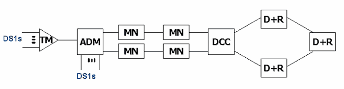
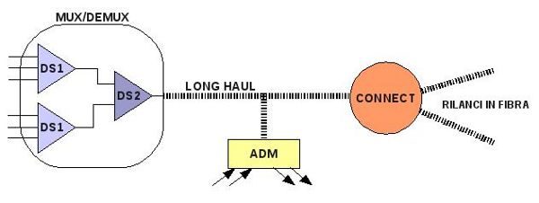

Torna alla pagina di Protocolli avanzati di rete
:: Protocolli avanzati di rete - Appunti del 9 Marzo ::
Cenni ai protocolli di rete pubblica
Parliamo un po' di codifiche di trasmissione a livello ISO/OSI 1 (quello fisico). Nella rete pubblica ne abbiamo fondamentalmente di due tipi: quella di tipo elettrico e quella di tipo ottico.
Lo standard di trasmissione elettrica è l'STS (Synchronous Transport Signal), basato su una codifica che considera i cambi di fronte del segnale digitale, quindi l'inversione dei segni, proprio come la Manchester che avevamo trattato nel corso di Sistemi. Un altro tipo di codifica avrebbe potuto mappare gli 0 o gli 1 con opportuni valori di tensione elettrica, ma ciò si dimostra inapplicabile sulle linee lunghe dato che non possiamo avere valori di riferimento comuni su entrambi i capi. Questo problema è noto con il nome di "terra comune".
Abbiamo vari livelli di STS: l'STS-1 che ha una velocità dei dati pari a 51,84Mbps, l'STS-3 che ha velocità tripla (155,52Mbps), l'STS-12 eccetera.
In generale, una delle principali proprietà di una codifica è il rapporto tra baudrate e bitrate, dove il primo è il numero di cambi di fronte nell'unità di tempo e il secondo è il numero di bit trasmessi nell'unità di tempo. Per usare al meglio il canale di comunicazione bisognerebbe utilizzare una codifica che garantisca certe proprietà al flusso di bit, in particolare avvicinando il valore del bitrate a quello del baudrate. Ciò si può ottenere aumentando la dispersione degli 1, ovvero la loro percentuale nella sequenza di bit che costituisce il segnale, perché si forza la generazione di nuovi fronti. Una strategia per ottenere questo risultato è lo scrambling, che in una sua possibile implementazione prevede i seguenti passi:
- la moltiplicazione del segnale digitale per un certo polinomio (opportunamente scelto)
- il trasferimento del segnale scramblato
- la divisione del segnale per il polinomio di partenza così che possa riacquistare la forma originale prima che avvenga la ricezione
L'altra codifica di trasmissione è quella relativa alla rete ottica, in cui lo standard prende il nome di OC-N. Questo genere di trasmissione permette di avere cavi molto più lunghi rispetto a quelli elettrici, arrivando fino a 40km di portata (altri standard arrivano a centinaia di chilometri); oggi quasi tutti i trunk di rete pubblica sono ottici.
Il mezzo trasmissivo della rete ottica è la fibra ottica, costruita in modo da permettere a un raggio laser di una certa lunghezza d'onda e polarizzazione di propagarsi al suo interno senza perdere in potenza, impedendo cioè la sua dispersione. Questo tipo di tecnologia richiede schede di creazione e ricezione di segnali ottici che sono molto costose: viaggiamo tra i 60mila e gli 80mila dollari.
La codifica può avvenire solo usando la fase (WDM), perché se andiamo a intervenire su altri parametri c'è il rischio che il segnale si disperda. Le diverse fasi sono ottenute fisicamente facendo passare il laser attraverso una lente comandata, così da ottenere un rallentamento codificabile in bit. Nella circuiteria ottica è tipico utilizzare quattro possibili valori di ritardo utilizzando una coppia di bit (00, 01, 10, 11), e quindi mi servono più bit per riscontrare un cambio di fase.
Il multiplexing su rete ottica si può realizzare in due modi:
- costruendo più cilindri concentrici di fibra all'interno dello stesso cavo, ognuna con una propria capacità di rifrazione. In questo modo è possibile sparare più laser a lunghezza d'onda diversa contemporaneamente, tanto non ci sarà modo di confonderli. Avrò però bisogno di un filtro all'arrivo
- utilizzo più laser di una stessa lunghezza d'onda all'interno della stessa fibra ottica, ma multiplexandole in tempo (TDM)
Generalmente queste due strategie vengono adottate insieme.
Osserviamo inoltre che la rete ottica introduce un fattore di sicurezza fisica delle informazioni trasmesse, cioè nessuno può intercettare a livello fisico una comunicazione in fibra poiché richiede un'azione troppo invasiva e costosa (altrettanto non si può dire della normale trasmissione che viaggia sottoforma di segnale elettrico).
Vediamo quali sono gli attori della rete (dagli appunti di Damiani):

dove:
- TM è il terminal mux, il multiplexer/demultiplexer direttamente collegato ai subscribers loop degli utenti. Effettua la codifica del segnale da analogico a digitale e viceversa
- ADM è l'add & drop mux, che (semplificando) aggiunge e toglie telefonate dal trunk a cui è interfacciato; per farlo deve essere in grado di effettuare una conversione da elettrico a ottico e viceversa
- DCC è il digital cross connect, ovvero il punto di separazione che consente il biforcamento dei trunk
- MN è il matched node, cioè quel nodo di passaggio con compiti non prefissati. Ad esempio può fare switching o fungere da ripetitore
- D+R è il drop & repeat, un punto di arrivo in cui alcuni segnali vengono rigenerati ed altri no
Tutti questi elementi sono soggetti a standard di controllo della stessa famiglia del signaling, anche se la tendenza attuale è spostarsi verso il protocollo IP per diramare i comandi di amministrazione.
Per quanto riguarda la topologia ne abbiamo fondamentalmente di due tipi: quella aperta chiamata long haul e quella chiusa ad anello chiamata ring. In entrambi i casi abbiamo delle linee full duplex, perché la propagazione del laser procede in un unico senso.
Ma come vengono coordinati tutti questi dispositivi e tecnologie? Con la definizione di un OAM&P (Operations, Administration, Maintenance, and Provisioning), ovvero quell'insieme di protocolli orientati alla gestione della rete. Tra questi citiamo: l' AIS (Alarm Indication Signal) e l' RDI (Remote Defect Indication).
L'amministrazione della rete pubblica è profondamente diversa da quella di una rete privata, in cui ad esempio eventuali malfunzionamenti e comportamenti anomali sono segnalati direttamente dall'utenza. Nella rete pubblica abbiamo invece un sistema di allarmistica che raccoglie tutti i tipi di messaggi generati dai vari dispositivi della rete stessa, in particolar modo quelli critici. Tutti questi segnali di allarme sono monitorati da terminali di controllo come i NOC (Network Operating Center), difficilmente affidati alla supervisione umana, ma più spesso gestiti da sistemi automatizzati.
Concludiamo citando il concetto di cross layering applicato alla rete telefonica, ovvero l'interfacciamento di diversi livelli ISO/OSI così da poter prendere ad esempio alcune decisioni a livello IP (come l'instradamento) tenendo conto della situazione di livello 2. Notare che i confini dei livelli erano sempre stati per definizione inviolabili, dunque ci troviamo di fronte a nuove tecniche e tendenze.
Telefonia digitale
Gli appunti sono abbastanza disordinati, perché disordinata è stata l'esposizione del prof. Iniziamo con uno schema e poi ragioniamoci su:

Partiamo da sinistra, in cui abbiamo i punti di MUX/DEMUX (multiplexing/demultiplexing) direttamente collegati ai subscribers loop e il cui compito è portare il bitrate dei canali ad un livello sufficiente per essere utilizzato in fibra. Notiamo l'esistenza di una gerarchia TDM, necessaria perché non è possibile avere una portante (o una lunghezza d'onda, se stiamo parlando di cavi ottici) per ogni flusso utente su uno stesso trunk digitale, ma dovremo unirne più di una in canali a bitrate più alto. Il caso più semplice consiste nel mettere due flussi da 64Kb in un unico da 128Kb e spedire prima un bit dell'uno e poi dell'altro. I MUX/DEMUX che fanno parte di questa gerarchia sono chiamati DS-n (Digital Signal, in america noti come T-n), dove n indica il loro livello: il DS-0 è un unico canale con velocità di 64kb, mentre il DS-1 (in Europa) aggrega 32 DS-0 arrivando così a 2Mb. Questo mi fa capire che per avere l'ADSL devo per forza saltare dei livelli gerarchici e collegarmi direttamente a quelli che offrono banda più alta. Osserviamo infine che più alto è il numero di canali multiplexati nello stesso trunk e maggiore è la probabilità di avere banda sprecata nascosta, dovuta a quei canali che non sono associati a nessuna chiamata.
Proseguiamo con lo schema e notiamo l'apparizione della linea ottica (sempre digitale, ma ad alta velocità), nel nostro caso con una topologia long haul. Ad essa sono interfacciati gli ADM (Add & drop), che smistano le chiamate in entrata e in uscita previa trasduzione elttro/ottica, e i dispositivi di connect che rappresentano i punti di snodo (puramente ottici) verso altre centrali, eventualmente di altri operatori telefonici. I cavi uscenti da un connect sono chiamati rilanci in fibra e sono a livelli più bassi di OC-n, quindi avremo una gerarchia anche nella rete ottica dato che le ripartizioni di una linea veloce saranno per forza di cose più lente.
Osservazione sulle società di telecomunicazione: tutti gli operatori di rete pubblica devono soddisfare opportuni requisiti ed avere l'approvazione del ministero, formalità non necessarie invece per quelli di rete privata. Esistono molte formule di ingaggio o di mercato per gli operatori, ad esempio la vendita di fibra accesa o spenta (con o senza le schede di illuminazione incluse nel prezzo.
Nel corso degli anni c'è stato un processo di standardizzazione del livello 2 di rete pubblica su fibra, e il contributo più grande è arrivato dal CCITT (Comité consultatif international téléphonique et télégraphique) attualmente noto come ITU-T, ovvero l'ente più importante per la definizione di protocolli di telecomunicazione (è quello che l'IEEE è per l'elettronica e l'informatica). Nel 1988 vennero approvati gli standard SONET/SDH, il primo utilizzato in america e il secondo in Europa. Tutti i dispositivi che abbiamo visto in questa lezione sono definiti in tale standard.
Torna alla pagina di Protocolli avanzati di rete